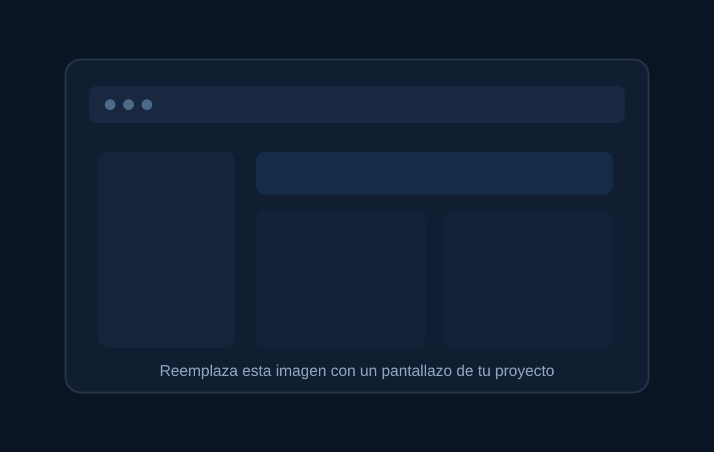

Hola, soy
Diana Tibisay
Pacheco Moreno
Java Backend Developer | Full Stack Developer
Desarrollo aplicaciones web, APIs REST y soluciones empresariales con Java, Spring Boot, Angular, React y TypeScript.
const developer = {
name: "Diana Pacheco",
focus: "Java Backend",
stack: [
"Spring Boot",
"React",
"Angular",
"PostgreSQL"
],
mindset: "Aprendizaje continuo"
};Perfil
Sobre mí
Soy desarrolladora de software con experiencia en el desarrollo de aplicaciones web y móviles, con enfoque en Java Backend y desarrollo Full Stack. He trabajado con Java, Spring Boot, JavaScript, TypeScript, React, Angular y Python, construyendo soluciones orientadas a necesidades reales de negocio.
Tengo experiencia desarrollando APIs REST, integraciones entre sistemas, microservicios y funcionalidades frontend, además del manejo de bases de datos como PostgreSQL, MySQL y MongoDB. También he trabajado con pruebas unitarias y funcionales, Git, GitHub, GitLab, Postman y entornos dockerizados.
Me caracterizo por el análisis crítico, la proactividad, la adaptación a equipos ágiles y el aprendizaje continuo. Mi objetivo es seguir creciendo como desarrolladora y aportar soluciones de software mantenibles, escalables y orientadas a resultados.
Stack tecnológico
Habilidades
Frontend
Bases de datos
Herramientas
Trayectoria
Experiencia
Desarrolladora de Software Freelance
Desarrollo Full Stack
- Levantamiento y análisis de requerimientos con clientes.
- Desarrollo de aplicaciones web y móviles con Angular, React Native y Java/Spring Boot.
- Diseño e implementación de APIs REST e integraciones entre sistemas.
- Administración de PostgreSQL, MySQL y MongoDB.
WOG S.A.S.
Java Junior Backend / Angular Frontend
- Implementación de funcionalidades frontend con React, Angular y TypeScript.
- Creación y mantenimiento de microservicios con Java y Spring Boot.
- Corrección de bugs para mejorar la estabilidad del sistema.
- Pruebas con JUnit, Jest, Mockito y Postman.
Trabajo destacado
Proyectos

Proyecto Full Stack
Sistema de Gestión de Notas
Aplicación web para gestionar alumnos, materias y notas. La solución separa frontend y backend y se comunica mediante servicios REST.
Funcionalidades
- Registro de alumnos y materias.
- Registro de notas asociadas a un alumno y una materia.
- Consulta de notas por alumno.
- Validación de notas entre 1 y 5.
- Interfaz responsiva para la gestión de información.
React + TypeScript
→
API REST
→
Spring Boot
→
PostgreSQL
Hablemos
Contacto
Estoy abierta a oportunidades donde pueda aportar como Java Backend Developer o Full Stack Developer y seguir fortaleciendo mi experiencia en soluciones de software.